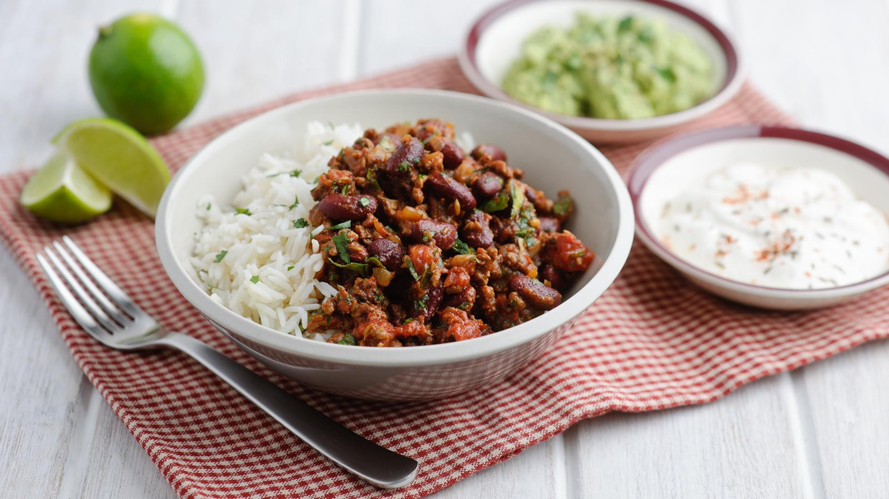

Odin Recipes

Easy chilli con carne
This is a really easy chilli con carne recipe. It has loads of flavour even though it uses mostly store cupboard ingredients. You can experiment with how hot it is by leaving the seeds in the fresh chillies or adding a pinch of dried chilli flakes.
Each serving provides 420 kcal, 43g protein, 22g carbohydrates (of which 9.5g sugars), 12g fat (of which 4g saturates), 9.5g fibre and 1g salt.
Ingredients
- 2 tbsp olive oil
- 2 onions, chopped
- 2 garlic cloves, crushed
- 1kg/2lb 4oz lean beef mince
- 250ml/9fl oz red wine (optional)
- 2 x 400g tins chopped tomatoes
- 3 tbsp tomato purée
- 2 red chillies, thinly sliced, or 3–4 tsp dried chilli flakes
- 1 tsp ground cumin
- 1 tsp ground coriander
- 1 cinnamon stick or ½ tsp ground cinnamon
- good shake of Worcestershire sauce
- 1 beef stock cube
- 2 x 400g tins red kidney beans, drained and rinsed
- 1 large bunch fresh coriander leaves, roughly chopped
- salt and freshly ground black pepper
- lime wedges, rice, guacamole, soured cream and green salad, to serve
How to make